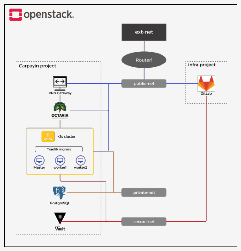
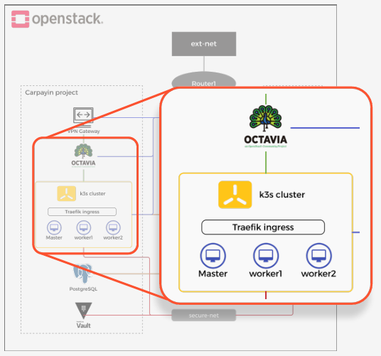
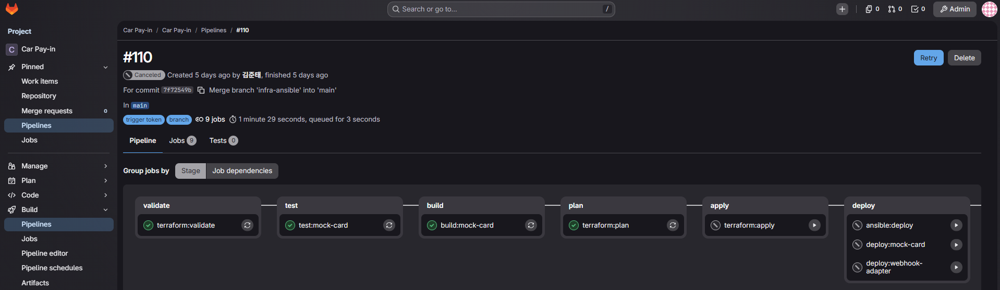
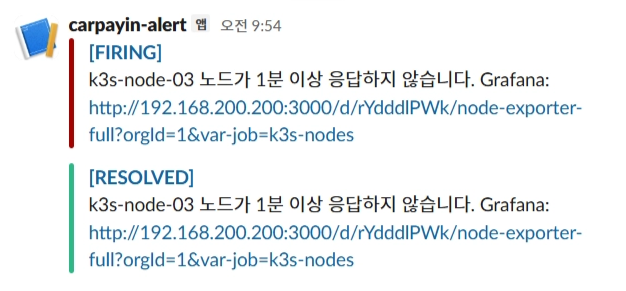
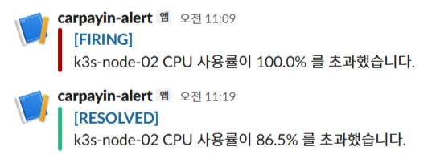
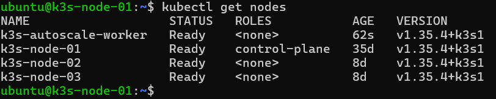
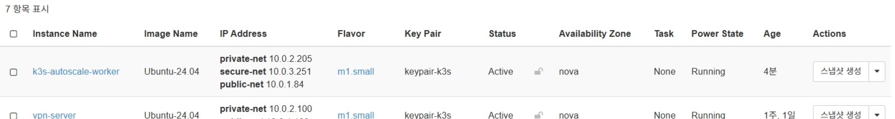

차량에서 QR 인증만으로 입차부터 요금 결제까지 사람의 개입 없이 처리되는 주차 결제 시스템입니다. 운전자가 주차장에서 내려 정산기를 조작할 필요 없이, 시동을 켜면 차량 인포테인먼트 화면에서 바로 요금을 결제합니다.

- 기간
- 2026.04.13 - 2026.06.29 (약 2.5개월)
- 팀
- 5인 팀 프로젝트
- 담당
- Private Cloud 구축, IaC, CI/CD, 모니터링
OpenStack으로 프라이빗 클라우드를 직접 구축하며, 가상화·네트워크·스토리지가 어떻게 맞물려 하나의 클라우드가 돌아가는지 이해하게 되었습니다. 그 위에 IaC와 CI/CD, 알림 기반 오토스케일링을 얹으면서 손으로 하던 일을 자동으로 도는 구조로 바꾸는 경험을 했습니다.
실행 환경
- 단일 물리 서버(Ubuntu 22.04, 62GiB RAM, NVMe 477G)에 Kolla-Ansible AIO로 OpenStack 2024.2를 직접 구축
- 네트워크 인터페이스는 Wi-Fi 단일 NIC만 존재 (192.168.200.200/22)
- 실습 환경 특성상 공인 IP를 받을 수 없어, 할당받은 40000~40024 포트 25개를 호스트에서 iptables로 포워딩해 Horizon·SSH·Grafana·GitLab 등 필요한 서비스만 외부에 노출
- Cinder는 별도 파티션을 LVM VG로 잡아 블록 스토리지로 사용
- 프라이빗 클라우드 안에서 운영된 서비스는 카드 승인(mock-card) 하나이며, 나머지 서비스는 AWS에 배포

단일 NIC 환경의 External Network 구성
- 물리 NIC이 1개뿐인 환경에서 OpenStack의 External Network를 확보해야 하는 제약이 있었습니다. OVS가 물리 NIC을 가져가면 호스트 자체의 통신이 끊기기 때문입니다
- 물리 NIC은 호스트 통신용으로 남기고,
dummy0 가상 인터페이스를 만들어 OVS br-ex에 연결해 External Network를 확보했습니다. Floating IP는 사용하지 않고, 외부에서 들어오는 요청을 호스트의 iptables DNAT가 받아 VM의 내부 IP로 직접 넘기는 방식으로 처리했습니다
네트워크 계층 분리
- 네트워크는 외부 노출 여부에 따라 3계층으로 분리했습니다.
public-net만 라우터로 외부와 연결하고, DB가 있는 private-net과 Vault만 놓인 secure-net은 라우터에 연결하지 않아 외부 경로 자체를 차단했습니다
- 격리된 두 네트워크에 접근하기 위해 k3s 노드를 세 네트워크에 모두 연결한 멀티홈으로 구성했습니다. 구조 설계는 팀원과 함께 논의했고, 구축은 팀원이 담당했습니다.
- 별도 Bastion VM을 두지 않고 이 멀티홈 노드를 경유해 DB·Vault에 SSH로 접근했습니다. SSH Agent Forwarding을 사용해 개인키를 중간 노드에 남기지 않도록 했습니다
k3s 클러스터와 로드밸런싱
- 단일 물리 서버 위에 VM을 올려 클러스터를 구성해야 했기 때문에, 컨트롤 플레인이 가벼운 k3s를 선택했습니다. 필요한 기능은 표준 Kubernetes와 동일해 제약이 없었습니다
- k3s를 서버 1대(
10.0.1.81)와 에이전트 2대(.82, .83)로 구성하고, Ansible role로 에이전트 설치·조인을 자동화했습니다
- 로드밸런서는 MetalLB도 검토했지만, Octavia가 Neutron과 네이티브로 통합되어 별도 관리 포인트가 늘지 않는다는 점에서 채택했습니다
- L4/L7 이중화: Octavia가 VIP(
10.0.1.110)로 단일 진입점을 제공하며 노드 3대로 ROUND_ROBIN 분배하고, 클러스터 안에서는 Traefik이 경로별 L7 라우팅을 담당합니다. 노드 하나가 죽어도 헬스모니터(/health)가 감지해 나머지로 우회합니다
- HPA로 파드를 6~9개 사이에서 자동 조절해 파드 레벨 부하에 대응했습니다

하이브리드 클라우드 연결
- AWS와 OpenStack을 WireGuard VPN 터널로 연결해, 카드 원번호를 다루는 승인 요청만 프라이빗 클라우드 안으로 들어오도록 구성했습니다. 터널 구축과 설정은 팀원이 담당했습니다.
- VPN 서버에 도달한 트래픽이 k3s까지 닿도록 iptables DNAT로 Octavia VIP(
10.0.1.110)에 전달하는 구간을 구성했습니다
- VM 구성은 Ansible role로 템플릿화해 재현 가능하게 관리했습니다
시크릿 관리
- HashiCorp Vault를
secure-net에 단독 배치해 네트워크 레벨에서 접근을 차단했습니다. secure-net은 라우터에 연결하지 않아 k3s 노드의 secure NIC 경유로만 접근이 가능합니다
- KV v2 엔진과 AppRole 인증을 구성하고, External Secrets Operator가 Vault의 값을 Kubernetes Secret으로 1시간 주기 동기화하도록 연동했습니다. 파드는 그 Secret만 참조합니다. 시크릿 구성과 ESO 연동은 팀원이 담당했습니다.
IaC와 CI/CD
- Terraform은 프로비저닝(VM, 네트워크 포트, Octavia LB·리스너·풀·멤버·헬스모니터), Ansible은 설정과 스케일링으로 역할을 분리했습니다
- GitLab을 배포 대상에 따라 이중으로 운영했습니다. AWS에 배포되는 서비스는 SaaS GitLab을, OpenStack 내부에 배포되는 Mock Card는 직접 구축한 Self-Hosted GitLab을 사용합니다
- Self-Hosted를 택한 이유는 폐쇄망 안에서 컨테이너 이미지와 Terraform State 같은 민감 리소스를 외부로 내보내지 않기 위해서였습니다. Runner가 OpenStack 내부에 직접 접근할 수 있어 SCM·CI/CD·Registry·State를 한 플랫폼에서 통합 관리했습니다
- 변경 경로별로 파이프라인이 갈라지도록 구성했습니다. Terraform은
validate·plan까지 자동이고 apply는 수동 승인, Ansible·webhook-adapter·mock-card 배포도 수동 승인 게이트를 둡니다
- Terraform state는 GitLab HTTP backend로 관리하고, lock 충돌을 막기 위해
apply를 파이프라인 전용으로 제한했습니다

모니터링과 오토스케일링
- Prometheus가 node-exporter로 노드 지표를 수집하고, AlertManager가 CPU 80% 초과가 5분간 지속되면 Slack
#alert-manager 채널로 알림을 발송합니다. 노드가 1분 이상 응답하지 않는 VM Down 상황도 같은 채널로 알립니다
- 노드 레벨 오토스케일링: HPA는 파드만 늘릴 수 있고 노드 자체는 늘리지 못합니다. CPU 과부하 알림은 Slack과 동시에 webhook-adapter로도 전달되는데, 직접 만든 FastAPI 기반 webhook-adapter가 이를 받아 GitLab CI 파이프라인을 트리거하고, Ansible이 VM을 생성해 k3s에 join하거나 drain 후 제거하도록 구성했습니다
- 알림이 연속으로 들어올 때 노드가 계속 늘어나는 것을 막기 위해 scale-out 10분, scale-in 5분의 쿨다운을 어댑터에 구현했습니다




팀원이 구현한 영역
- 네트워크 구성: public/private/secure 3계층 분리와 k3s 노드 멀티홈 구축 (구조 설계는 공동)
- 하이브리드 연결: AWS와 OpenStack 사이 WireGuard VPN 터널 구축과 설정
- 시크릿 구성: Vault 시크릿 등록과 External Secrets Operator 연동
- AWS 인프라: ECS, Lambda, ALB 등 퍼블릭 클라우드 구성과 보안그룹 설계
- 서비스 코드: carpayin-backend, mock-pg, pms, mock-card 애플리케이션 구현
- Android 클라이언트: 차량 내 QR 인증 및 결제 흐름 앱
- DB 설계: 서비스별 PostgreSQL 스키마와 Redis 키 설계
트러블슈팅
Octavia 로드밸런서가 OFFLINE에서 벗어나지 못하는 문제
- 문제
- 로드밸런서를 생성해도 amphora가 계속 OFFLINE 상태여서 트래픽 분배가 되지 않았습니다.
- 원인
- 앞단에 세 가지 문제가 먼저 있었습니다. Amphora 이미지가 잘못된 프로젝트에 올라가 있었고, Redis 미배포로
octavia_worker가 크래시 루프를 돌고 있었으며, LB가 PENDING_CREATE에 멈춰 삭제도 안 되는 상태였습니다. 이것들을 정리한 뒤에도 OFFLINE이 풀리지 않았습니다. 근본 원인은 heartbeat 경로였습니다. Health Manager는 lb-mgmt-net 전용 인터페이스 o-hm0에서 수신 대기하는데, kolla-ansible이 Amphora에 알려주는 수신 주소(controller_ip_port_list)를 기본값인 Wi-Fi NIC으로 설정해두어 heartbeat가 엉뚱한 주소로 가고 있었습니다.
- 해결
globals.yml에 octavia_network_interface: "o-hm0"를 명시하고 Octavia를 reconfigure한 뒤 amphora를 failover로 교체해, 멤버 3대가 ONLINE으로 올라오고 VIP 헬스체크가 정상 응답하는 것까지 확인했습니다.- 배운 점
- 눈에 보이는 오류를 다 고쳐도 증상이 남아 있다면 아직 근본 원인에 도달하지 못한 것이라는 것을 배웠습니다. 관리 트래픽이 통과하는 경로를 먼저 확인했다면 더 빨리 찾았을 문제였습니다.
단일 NIC 환경에서의 SSH 단절: 3개 계층이 겹친 장애
- 문제
dummy0로 External Network를 구성해 배포를 마친 뒤에도 VM으로 SSH가 들어가지 않았고, 호스트를 재부팅할 때마다 같은 증상이 반복됐습니다.- 원인
- 한 가지가 아니라 세 계층이 겹쳐 있었습니다.
br-ex에 IP가 붙지 않아 게이트웨이 역할을 못 하고 있었고, 인스턴스 생성·삭제 과정에서 OVS 에이전트와 vSwitch 간 동기화가 어긋나 br-int의 Flow Table이 오염된 상태였으며, 커널의 bridge-nf-call-iptables가 켜져 있어 보안그룹용 Linux Bridge를 지나는 L2 패킷까지 L3 iptables 검사를 받다가 드랍되고 있었습니다.
- 해결
- 팀원과 함께 계층을 나누어 하나씩 확인했습니다.
br-ex IP를 복구하고, neutron_openvswitch_agent 컨테이너를 재시작해 Neutron DB의 최신 정책으로 br-int·br-tun의 OpenFlow 규칙을 재구성했으며, net.bridge.bridge-nf-call-iptables=0을 영구 설정으로 적용해 재부팅 후에도 유지되도록 했습니다.
- 배운 점
- 하나의 증상이 하나의 원인에서 오지 않는다는 것을 겪었습니다. 가상화·네트워크·OS 계층을 나눠 각각에서 무엇이 끊겼는지 확인하는 방식이 이후 장애 대응의 기본이 되었습니다.
Terraform이 유발한 VM 삭제 사고
- 문제
- GitLab VM에 NIC을 추가하려고 network 블록을 수정한 뒤
plan 결과를 확인하지 않고 apply를 실행했는데, Terraform이 VM을 삭제하고 재생성했습니다.
- 원인
- OpenStack 프로바이더에서 network 블록은 in-place 변경이 되지 않아
replace로 처리됩니다. plan에 forces replacement와 1 to destroy 경고가 이미 나와 있었지만 확인하지 않고 넘어간 것이 문제였습니다.
- 해결
- 삭제 대상 VM 위에서 GitLab Runner가 돌고 있었던 터라 VM이 죽는 순간 apply job도 함께 중단되면서 부팅 볼륨은 남았습니다. 남은 볼륨을 소스로 VM을 재생성하고, 바뀐 IP(
10.0.1.67에서 10.0.1.162로)에 맞추어 gitlab.rb와 Runner 설정, iptables 포워딩 규칙을 다시 잡은 뒤 Terraform state를 다시 import해 동기화했습니다. 이후 NIC 추가는 openstack_compute_interface_attach_v2로 분리하고, 부팅 볼륨에 delete_on_termination = false와 prevent_destroy = true를 걸었으며, apply는 CI 수동 승인을 거치도록 바꿨습니다.
- 배운 점
- IaC는 편한 만큼 한 번에 많은 것을 지울 수 있다는 것을 알게 되었습니다. 사람이 실수하지 않도록 주의하는 것보다, 실수해도 되돌릴 수 있는 장치를 걸어두는 편이 확실하다는 걸 경험으로 배웠습니다.